Transformers
Chadi Helwe, PhD
CSC 464: Deep Learning for Natural
Language Processing
Introduction
Introduction to Transformers
Transformers are the standard architecture for building modern large language models such as ChatGPT, Gemini, and DeepSeek.
They have completely shifted the paradigm in the field of speech, language processing, and computer vision.
Their success comes from a powerful mechanism called attention.
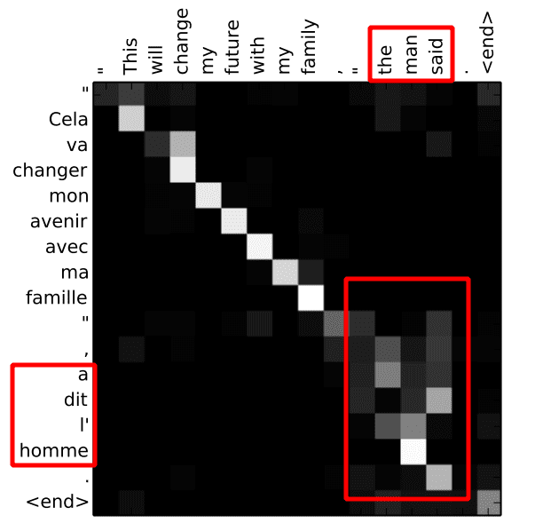
Transformers
Autoregressive Language Models
The primary focus of this architecture is left-to-right language modeling, also referred to as causal or autoregressive modeling.
The Process:
-
The model is fed a sequence of input tokens.
-
It predicts output tokens one at a time.
-
Predictions are heavily conditioned on the prior token context.
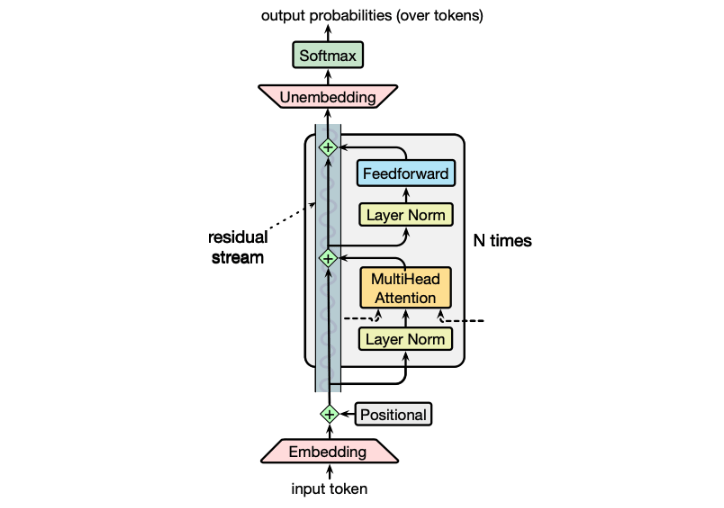
Transformers
Token and Position Embeddings
Token Embedding: Each token is mapped to a vector embedding using a linear layer, the embedding matrix \(E\).
Positional Encoding: Transformers use a special mechanism to encode a token's position in the input sequence.
Combined Representation: The positional information is added directly to the embedding matrix, yielding a single embedding that encodes both the word itself and its position in the sequence.
Transformers
The Residual Stream (1/2)
Tokens are passed forward through a sequence of \(N\) stacked transformer blocks.
The Residual Stream: Think of each transformer block as part of a continuous stream where the initial input embedding flows directly to the output.
Transformers
The Residual Stream (2/2)
As it flows, the stream is continuously enriched by three distinct modules:
-
Multi-head attention layers
-
Feedforward networks
-
Layer normalization
The overall value of the stream at any given layer is the sum of the original input embedding plus all the outputs from every previous layer and block.
Transformers
Multi-Head Self Attention
The multi-head attention layer (or self-attention layer) is the core intuition of the transformer and what sets it apart from standard feedforward networks.
Function: It builds a contextual representation of a token's meaning by attending to and integrating data from the surrounding tokens.
Mechanism: It essentially moves information from one residual stream to another, augmenting a specific token position with contextual information from other token positions.
Transformers
The Language Modeling Head
After the representation passes through all \(N\)transformer blocks, the final block produces an output embedding.
This final embedding is passed through a linear unembedding matrix \(U\).
A softmax function is then applied over the entire vocabulary to generate a probability distribution over the possible next tokens.
Together, this unembedding matrix and the softmax function are referred to as the language modeling head.
Transformers
Attention
Problem with Static Embeddings
Static embeddings (like word2vec) assign a single, static vector to each word, completely ignoring its surrounding context.
The Coreference Dilemma: Static vectors fail with dynamic words like pronouns.
-
Example: "The chicken didn't cross the road because it was too tired/wide." A static vector cannot shift its meaning to refer to the chicken or the road based on the context.
Long-Distance Dependencies: They cannot integrate far-away clues needed for:
-
Subject-Verb Agreement: Matching "keys" with "are".
-
Word Senses: Differentiating a river "bank" from a financial institution
Transformers
Contextual Embeddings
Overcoming Distance: Helpful contextual clues are often located far away from the target word in a sentence or paragraph.
Dynamic Representations: Transformers solve the static word problem by building contextual embeddings that actively integrate the meanings of surrounding words.
Layer-by-Layer Enrichment: The model does not do this all at once; it builds increasingly richer and more complex representations as data moves up through the network.
Transformers
Attention Intuition
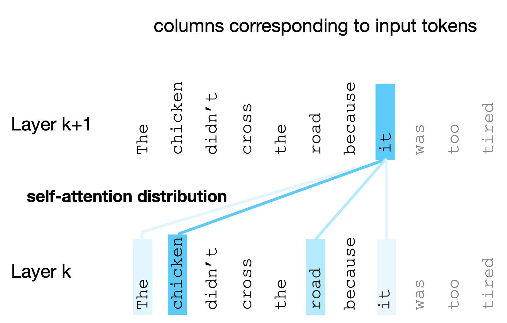
Attention is the core mechanism that selectively weighs and combines token representations from layer \(k\) to build the next representation in layer \(k+1\).
Transformers
Simplified Version of Attention (1/3)
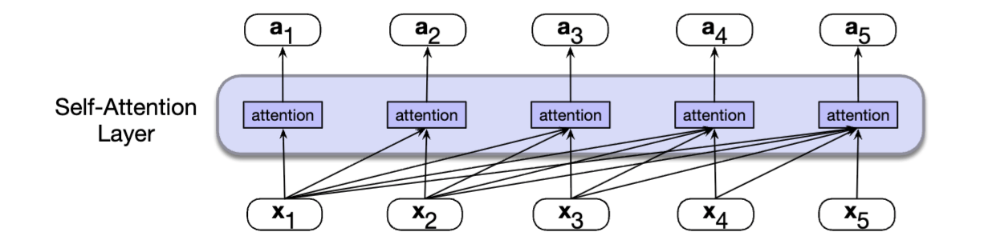
Transformers
Simplified Version of Attention (2/3)
At its core, attention is fundamentally just a weighted sum of context vectors.
The Goal: To compute an attention output (\(a_i\)) for a specific token at position \(i\).
The Mechanism: We take all prior token representations ( \(x_j\) where \(j \le i\)) and sum them together. Each prior representation is multiplied by a specific scalar weight (\(\alpha_{ij}\)) that determines how much it should contribute to the final output.
$$a_i = \sum_{j \le i} \alpha_{ij} x_j$$
Transformers
Simplified Version of Attention (3/3)
How do we determine the \(\alpha_{ij}\) weight? We weight each prior token in proportion to its similarity to our current token.
Scoring with Dot Products: We calculate a raw similarity score by taking the dot product of the two vectors. Larger scores mean greater similarity.
$$score(x_i, x_j) = x_i \cdot x_j$$
Normalization via Softmax: Because dot products can range from \(-\infty\) to \(\infty\), we normalize these raw scores using a softmax function to create a valid probability distribution.
$$\alpha_{ij} = softmax(score(x_i, x_j)) \forall j \leq i$$
Transformers
The Anatomy of the Attention Head
In an actual transformer attention head, each input embedding plays three distinct roles during the attention process.
-
Query (\(q\)): The current element being compared to preceding inputs.
-
Key (\(k\)): A preceding input being compared to the current element to determine their similarity.
-
Value (\(v\)): The actual representation of a preceding element that will be weighted and summed.
Transformers use learned weight matrices to project the input vector (\(x_i\)) into these roles: \(q_i = x_i W^Q\), \(k_i = x_i W^K\), \(v_i = x_i W^V\).
Transformers
Scaled Dot-Product Attention (1/2)
Similarity Score: We compute similarity using the dot product between the current query and a preceding key (\(q_i \cdot k_j\)).
The Scaling Factor: The dot product can become very large, and exponentiating these values can cause numerical issues and gradient problems. To prevent this, we scale the scores by dividing by the square root of the key dimensionality (\(\sqrt d_k\)).
$$score(x_i, x_j) = \frac{q_i \cdot k_j}{\sqrt{d_k}}$$
Transformers
Scaled Dot-Product Attention (2/2)
Generating Probability Weights: The raw similarity scores are normalized using the softmax function, converting them into a probability distribution of weights (\(\alpha_{ij}\)).
$$\alpha_{ij} = \text{softmax}(\text{score}(x_i, x_j)) \quad \forall j \le i$$
Applying the Weights: Each preceding value vector (\(v_j\)) is multiplied by its corresponding probability weight (\(\alpha_{ij}\)).
The attention head's final output (\(head_i\)) is the weighted sum of all these proportional value vectors.
$$head_i = \sum_{j \le i} \alpha_{ij} v_j$$
Transformers
The Whole Picture of Self-Attention
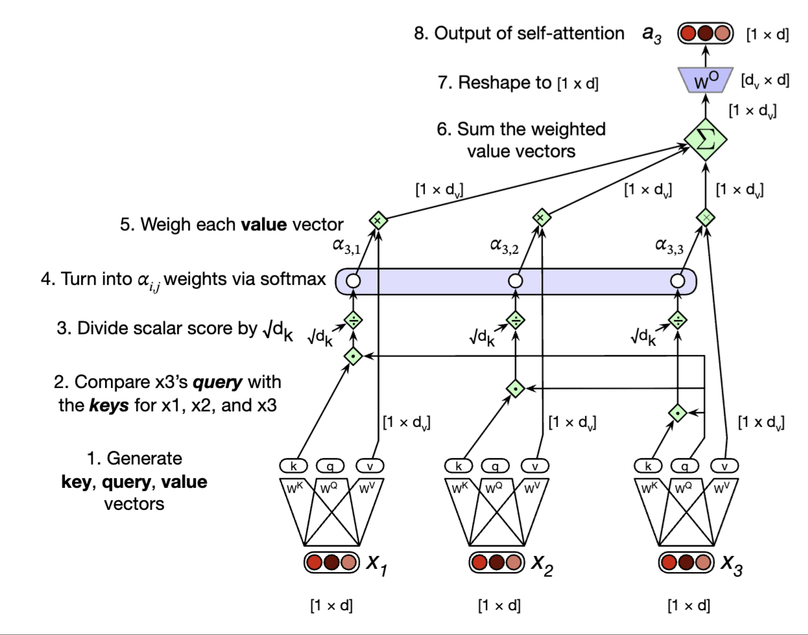
Transformers
Multi-Head Attention (1/3)
The Intuition: A single attention head might focus on one specific linguistic relationship (e.g., subject-verb agreement).
Parallel Processing: Transformers use \(A\) separate attention heads operating in parallel at the same depth.
Specialization: Each head \(c\) has its own unique set of parameters (\(W^{Qc}\), \(W^{Kc}\), \(W^{Vc}\)). This allows different heads to specialize in modeling different aspects of the context or distinct grammatical patterns simultaneously.
Transformers
Multi-Head Attention (2/3)
Independent Computation: Each head computes its own output vector of shape \([1 \times d_v]\).
Combining the Heads: The outputs from all \(A\) heads are concatenated together, resulting in a single wide matrix of shape \([1 \times Ad_v]\).
Final Projection: To restore the original model dimensionality, this concatenated vector is multiplied by a single, larger linear projection matrix \(W^O\) (shape \([Ad_v \times d]\)).
$$a_i = (head_1 \oplus head_2 \dots \oplus head_A) W^O$$
The final multi-head attention vector \(a_i\) successfully returns to the standard shape \([1 \times d]\), ready for the next layer.
Transformers
Multi-Head Attention (3/3)
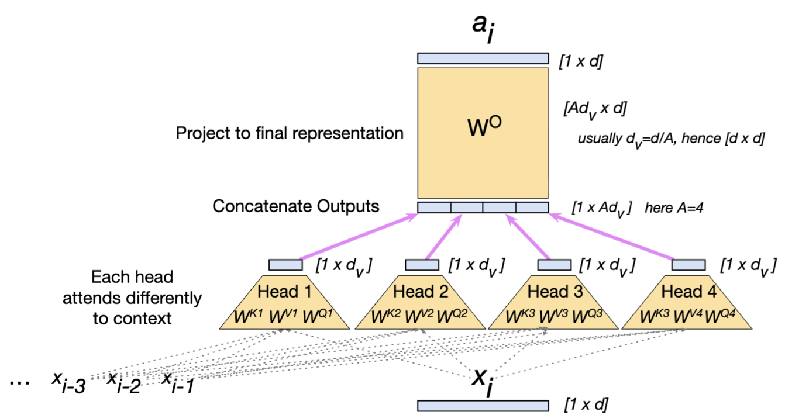
Transformers
Transformers Blocks
Beyond Attention
A full transformer block contains self-attention, but also includes a feedforward layer, residual connections, and normalizing layers ("layer norm").
The Residual Stream: We can conceptualize the processing of an individual token as a single, continuous stream of \(d\)-dimensional representations.
Information Flow: The stream starts with the original input token vector.
-
Components (like attention and feedforward networks) read their input from this stream.
-
Crucially, they add their output back into the stream via residual connections.
Transformers
Feedforward Layer
A fully-connected, two-layer neural network. The exact same feedforward network is applied independently to every single token position (\(i\)) in the sequence. However, the weights do change from one transformer layer to the next.
The hidden layer's dimensionality (\(d_{ff}\)) is deliberately designed to be much larger than the standard model dimensionality (\(d\)).
Example: In the original transformer architecture, \(d = 512\), while \(d_{ff} = 2048\).
$$FFN(x_i) = \text{ReLU}(x_i W_1 + b_1) W_2 + b_2$$
Transformers
Layer Norm
A normalization technique that keeps hidden layer values within a stable range to facilitate training.
Despite the name, it is applied to the embedding vector of a single token, not the entire layer.
It shifts the vector to have a zero mean and standard deviation of one, applying learnable gain (\(\gamma\)) and offset (\(\beta\)) parameters.
$$\text{LayerNorm}(x) = \gamma \frac{(x - \mu)}{\sigma} + \beta$$
Mean
Standard Deviation
Transformers
Putting it All Together (Prenorm Architecture) (1/2)
Modern transformers use the prenorm architecture, in which layer normalization occurs before the attention and FFN layers.
Step-by-Step Computation for Token \(i\):
-
Normalize Input: \(t^1_i = \text{LayerNorm}(x_i)\)
-
Self-Attention: \(t^2_i = \text{MultiHeadAttention}(t^1_i, [t^1_1, \dots, t^1_N)]\)
-
First Residual Add: \(t^3_i = t^2_i + x_i\)
-
Normalize Again: \(t^4_i = \text{LayerNorm}(t^3_i)\)
-
Feedforward: \(t^5_i = \text{FFN}(t^4_i)\)
-
Second Residual Add: \(h_i = t^5_i + t^3_i\)
Transformers
Putting it All Together (Prenorm Architecture) (2/2)
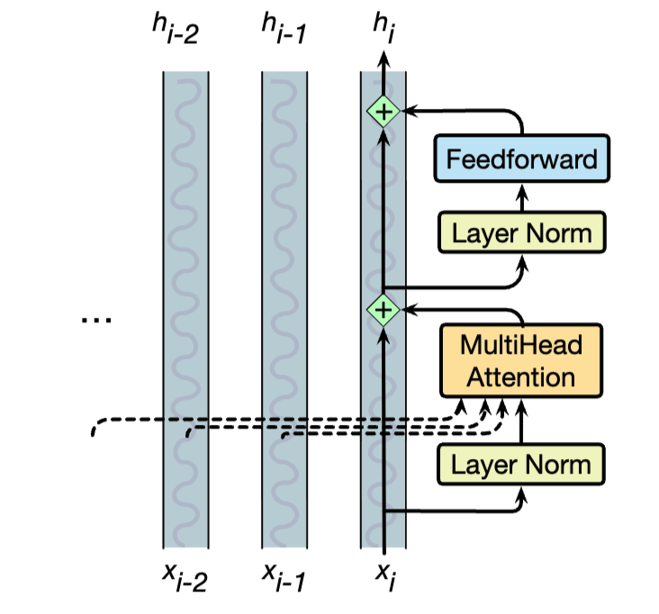
Transformers
Token-Mixing and Stacking (1/2)
The Token-Mixing Component: The multi-head attention module is the only part of the block that reads information from other token streams. It literally moves information from neighboring residual streams into the current one.
Modular Stacking: Because the block's input (\(x_i\)) and output (\(h_i\)) both share the exact same dimensionality \(d\), these blocks are perfectly modular. Large language models stack many of these blocks sequentially (ranging from 12 layers for smaller models up to 96+ for large models).
The Final Step: After passing through the entire stack, one final extra layer norm is applied before the representation reaches the language modeling head.
Transformers
Token-Mixing and Stacking (2/2)
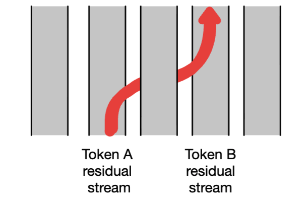
An attention head can move information from token A’s residual stream into token B’s residual stream.
Transformers
Parallelizing the Transformer
Parallelizing Computation
Instead of processing tokens one by one, transformers pack the entire input sequence of \(N\) tokens into a single matrix \(X\) with dimensions \([N \times d]\).
Simultaneous Projections: We can compute the Query (\(Q\)), Key (\(K\)), and Value (\(V\)) representations for all tokens simultaneously using highly optimized matrix multiplication:
- \(Q = XW^Q\) (Resulting shape: \([N \times d_q]\))
- \(K = XW^K\) (Resulting shape: \([N \times d_k]\))
- \(V = XW^V\) (Resulting shape: \([N \times d_v]\))
Transformers
The \(QK^T\) Attention Matrix
Calculating All Scores at Once: By multiplying matrix \(Q\) by the transpose of matrix \(K\) (\(K^T\)), we compute the dot-product similarity scores for every single token pair in one step.
The resulting product is an \([N \times N]\) matrix.
We scale these scores, apply a mask, normalize via softmax, and multiply by the \(V\) matrix to get the final head output:
$$\text{head} = \text{softmax}\left(\text{mask}\left(\frac{QK^T}{\sqrt{d_k}}\right)\right)V$$
Transformers
Masking the Future (Causal Attention)
In autoregressive language modeling, predicting the next word is straightforward if the attention mechanism can access future tokens in the \(QK^T\) matrix. To prevent this, we apply a mask matrix \(M\) to the upper-triangular portion.
We set \(M_{ij} = -\infty\) for all \(j>i\). When the softmax function is applied, these negative infinity values are compressed to exactly zero probability, effectively blinding the model to upcoming words.
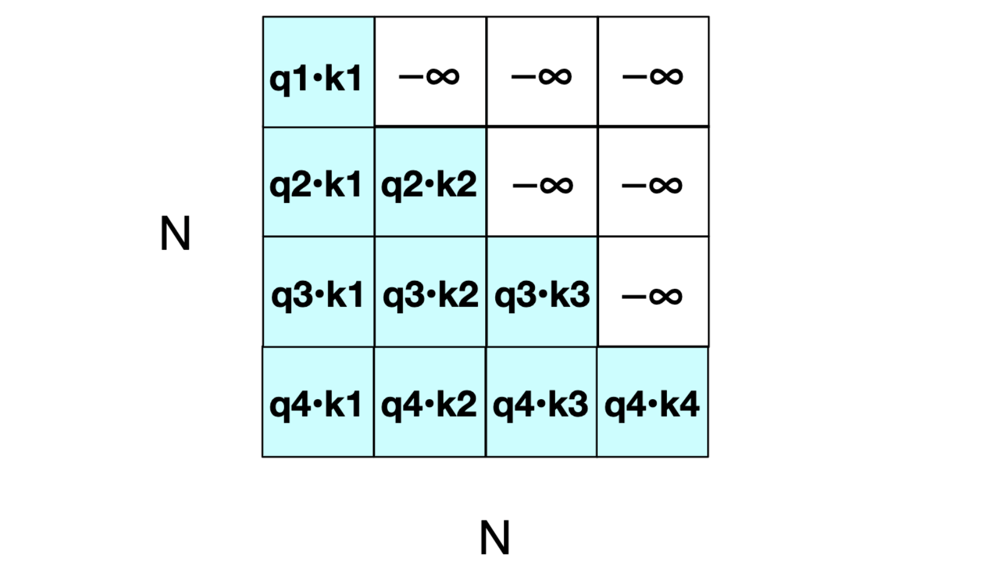
Transformers
Putting it All Together
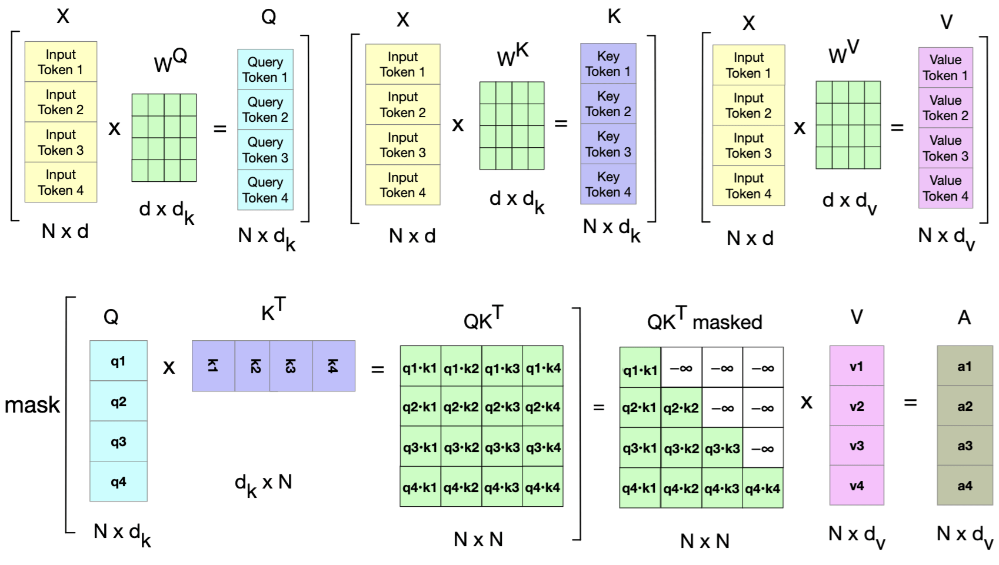
Transformers
The Input \(X\)
Constructing the Input \(X\) (1/2)
To build an input matrix \(x\) of shape \(N \times d\) (where \(N\) is context length and \(d\) is model dimensionality).
Transformers construct this matrix by computing and combining two separate embeddings:
-
Token Embeddings
-
Positional Embeddings
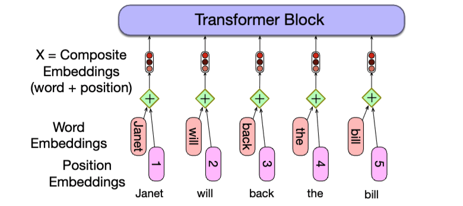
Transformers
Constructing the Input \(X\) (2/2)
The Token Embedding Matrix (\(E\)): A large matrix storing the initial vector representations for the entire vocabulary. It has a shape of \(|V| \times d\)
The Lookup Process:
-
Tokenize the input string into vocabulary indices (e.g., using BPE).
-
Use those indices to pull the corresponding row vectors directly from matrix \(E\).
Transformers
The Math of Token Selection (1/2)
Selecting a token embedding is mathematically equivalent to matrix multiplication using a one-hot vector.
Single Token: A word with vocabulary index \(i\) is represented as a \(1 \times |V|\) vector (all zeros except a \(1\) at index \(i\)). Multiplying this by \(E\) extracts the specific \(1 \times |d|\) token embedding.
Full Sequence: To process the whole context window at once, we represent the sequence as an \(N \times |V|\) matrix of one-hot vectors.
Multiplying this sequence matrix by the embedding matrix \(E\) efficiently yields the \(N \times d\) matrix of base token representations.
Transformers
The Math of Token Selection (2/2)
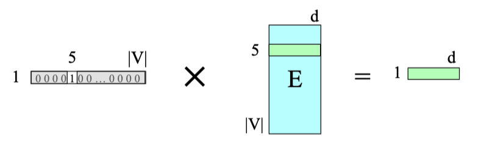
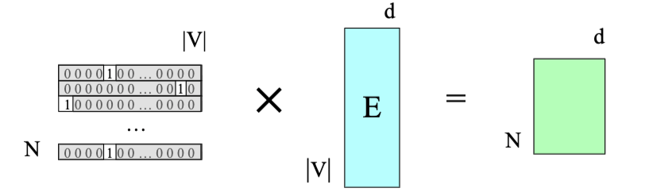
Transformers
Absolute Positional Embeddings
The Order Problem: Base token embeddings contain no sequential information. The model does not inherently know if "Janet" is at position 1 or position 10.
The Additive Solution: We combine the token embedding with a specific positional embedding to create a composite representation:
$$X = \text{Word Embedding} + \text{Position Embedding}$$
Absolute Position: The simplest approach is to learn a distinct, randomly initialized embedding vector for every possible absolute integer position (1, 2, 3, etc.) up to a maximum length, stored in an \(E_{pos}\) matrix of shape \(N \times d\).
Transformers
Advanced Positional Strategies
Limitations of Absolute Positions: Learned absolute positions can struggle to generalize to longer sequences during testing because outer limits appear less frequently in training data.
Sinusoidal Functions: To better handle arbitrary sequence lengths, the original transformer used static sine and cosine functions of varying frequencies. This helps the model map relationships (e.g., recognizing that position 4 is closer to 5 than to 17).
Relative Positional Embeddings: A more complex, modern approach directly represents the relative distance between tokens. Rather than being added to the initial input \(X\), relative positions are typically computed dynamically within the attention layers.
Transformers
The Language Modeling Head
The Language Modeling Head (1/2)
What is a "Head"? It is simply the final output layer of the network. While the main transformer blocks process the context, the "head" is the layer responsible for turning that processing into a prediction.
The Goal of Language Modeling: To predict the next word in a sequence. It achieves this by assigning a conditional probability to every possible next word, creating a probability distribution over the entire vocabulary.
The language modeling head takes the final \(d\)-dimensional output embedding representing token \(N\) from the last transformer layer
It uses this representation to predict the upcoming token at position \(N+1\).
Transformers
The Language Modeling Head (2/2)
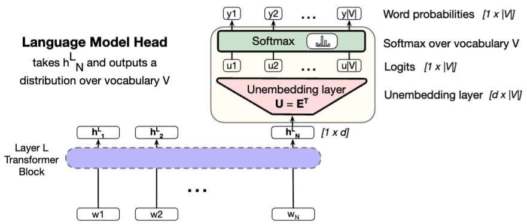
Transformers
The Unembedding Layer and Logits
The first component of the head is a linear layer that projects the final \([1 \times d]\) output embedding into a logit vector (also known as a score vector).
The Logit Vector (\(u\)): This vector has a dimensionality of \([1 \times |V|] \), meaning it contains one raw score for every single word in the vocabulary \(V\).
Weight Tying: Instead of learning an entirely new matrix for this projection, models commonly reuse the initial token embedding matrix \(E\).
By using \(E^T\) (the transpose of \(E\)), the model maps the data in reverse from the \([1 \times d]\) continuous vector space back out into the \([1 \times |V|]\) vocabulary space. Because it reverses the initial embedding step, \(E^T\) is often called the unembedding layer.
Transformers
Softmax and Sampling (1/2)
Converting to Probabilities: The raw scores (logits) generated by the unembedding layer are passed through a softmax function.
This function normalizes the logits into \(y\), a valid probability distribution over the entire vocabulary.
$$u = h^L_N E^T$$
$$y = \text{Softmax}(u)$$
The vector from the last layer at the last token.
Transformers
Softmax and Sampling (2/2)
Generating Text: Once we have this probability distribution, the model generates text by sampling a word from it.
Methods like "greedy decoding" simply pick the word with the highest probability, while other sampling methods introduce controlled randomness to improve creativity and diversity.
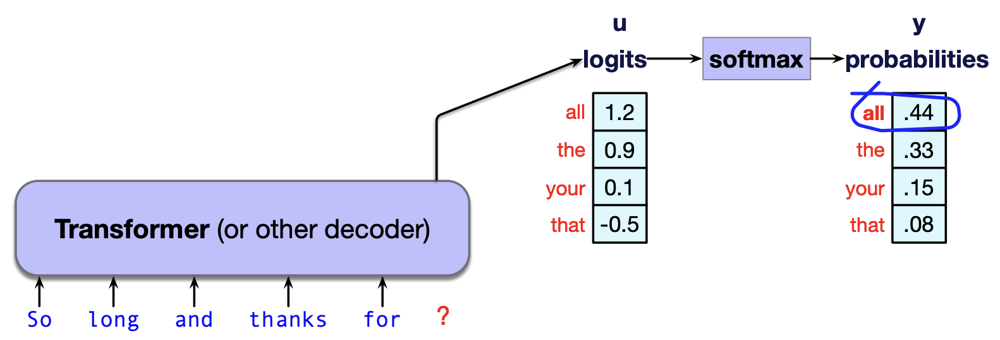
Transformers
A Transformer Language Model (Decoder-Only)
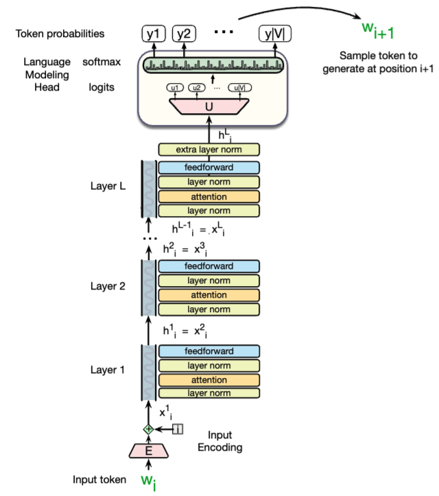
Transformers
Sampling
The Sampling Trade-Off
The Goal of Sampling: Instead of always picking the mathematically "safest" word, we sample from the probability distribution to generate text.
All sampling methods have parameters designed to trade off two competing factors:
-
Quality: Emphasizing highly probable words. Generates factual, coherent, and accurate text, but often sounds repetitive or "boring."
-
Diversity: Giving weight to middle-probability words. Generates creative, diverse, and unpredictable text, but risks incoherence or hallucinations.
Transformers
Temperature Scaling (1/4)
But before sampling, we can change the fundamental "shape" of the probability distribution by adjusting a parameter called Temperature (\(T\)).
Instead of passing the raw logits (\(u\)) directly into the standard softmax function, we divide every logit by \(T\) before exponentiating:
$$p_i = \frac{\exp(u_i / T)}{\sum \exp(u_j / T)}$$
Transformers
Temperature Scaling (2/4)
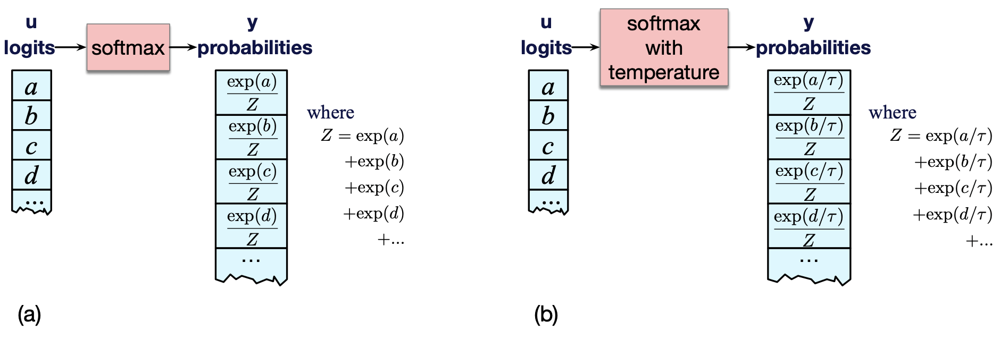
Transformers
Temperature Scaling (3/4)
The Effects of \(T\):
-
\(T = 1.0\): The standard softmax distribution.
-
Low Temperature (\(T < 1.0\)): Makes the distribution sharper. It boosts the scores of the most likely words and squashes the unlikely words. This results in highly predictable, focused, and deterministic text.
- High Temperature (\(T > 1.0\)): Makes the distribution flatter. It brings the probabilities closer together, increasing the chance of picking lower-ranked words. This results in more creative, surprising, and diverse text.
Transformers
Temperature Scaling (4/4)
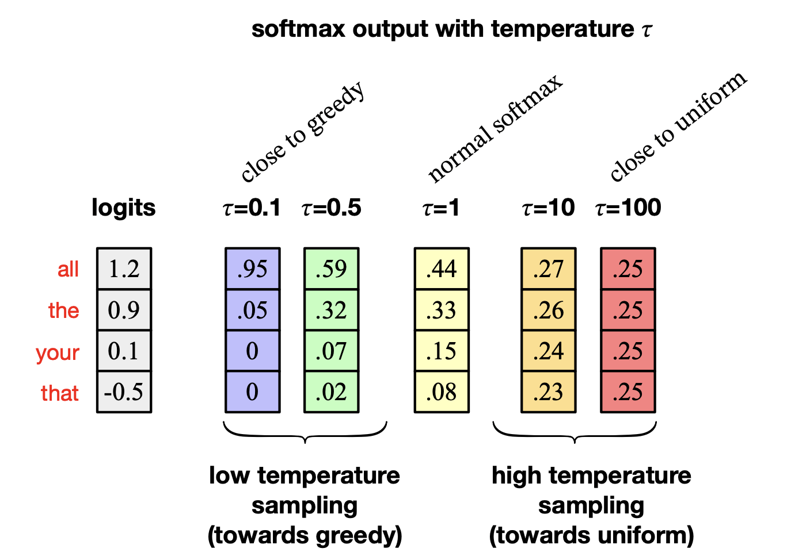
Transformers
Top-\(k\) Sampling
A simple generalization of greedy decoding (greedy decoding is just Top-\(k\) where \(k=1\)).
The Algorithm:
-
Define a fixed integer \(k\) in advance.
-
Rank the entire vocabulary by the language model's assigned likelihood.
-
Truncate: Throw away everything except the top \(k\) most probable words.
-
Renormalize: Recalculate the probabilities of the remaining \(k\)words so they sum to 100% (a valid distribution).
- Sample: Randomly select the next word from this newly weighted pool.
Transformers
The Flaw of a Fixed \(k\)
Human language is highly dynamic, but \(k\) is a rigid, fixed cutoff.
Scenario A: High Certainty (Concentrated Context)
-
The Situation: The model is 99% sure the next word is one of just 2 options.
-
The Trap: If we use \(k=10\), we artificially force 8 highly unlikely "garbage" words into the pool, risking nonsensical output.
Scenario B: High Uncertainty (Flat Context)
-
The Situation: There are dozens of equally valid, creative next words.
-
The Trap: If we use \(k=10\), we arbitrarily chop off perfectly good options, artificially limiting the model's diversity
Transformers
The Flaw of a Fixed \(k\)
Human language is highly dynamic, but \(k\) is a rigid, fixed cutoff.
Scenario A: High Certainty (Concentrated Context)
-
The Situation: The model is 99% sure the next word is one of just 2 options.
-
The Trap: If we use \(k=10\), we artificially force 8 highly unlikely "garbage" words into the pool, risking nonsensical output.
Scenario B: High Uncertainty (Flat Context)
-
The Situation: There are dozens of equally valid, creative next words.
-
The Trap: If we use \(k=10\), we arbitrarily chop off perfectly good options, artificially limiting the model's diversity
Transformers
Nucleus (Top-\(p\)) Sampling
Instead of a fixed number of words, we keep the top \(p\) percent of the probability mass. This allows the candidate pool to dynamically expand and contract.
The Algorithm:
-
Define a probability threshold \(p\) (e.g., \(p = 0.90\)).
-
Sort the vocabulary from most to least probable.
-
Iterate down the list, adding words to the pool until the sum of their probabilities hits the threshold \(p\):
$$\sum_{w \in V^{(p)}} P(w | w_{<t}) \ge p$$
Transformers
The Best of Both Worlds: Combining \(k\) and \(p\) (1/2)
In modern implementations (like HuggingFace or OpenAI), Top-\(k\) and Top-\(p\) are frequently used together as a two-step filtering pipeline.
Step 1: The Coarse Filter (Top-\(k\))
-
We first apply a relatively large \(k\) (e.g., \(k=50\)).
-
Why? This acts as a hard safety net. It instantly chops off the "long tail" of tens of thousands of highly improbable, nonsensical words, ensuring the pool never grows dangerously large even in a completely flat distribution.
Transformers
The Best of Both Worlds: Combining \(k\) and \(p\) (2/2)
Step 2: The Dynamic Filter (Top-\(p\))
-
Next, we apply Top-\(p\) (e.g., \(p=0.90\)) only to those remaining 50 words.
-
Why? This dynamically narrows the pool further based on the specific context. If the model is highly confident, it might reduce the pool from 50 down to just 3 words.
The Result: We get the dynamic, context-sensitive flexibility of Top-\(p\), protected by the strict upper-bound safety limit of Top-\(k\).
Transformers
Sampling in Action (1/2)
The Prompt: "The students stayed up all night studying for their final..."
The Model's Raw Probabilities:
-
exam (60%)
-
test (25%)
-
project (10%)
-
presentation (4%)
-
banana (1%)
Transformers
Sampling in Action (2/2)
Applying Top-\(k\) (Fixed at \(k=5\)):
-
The pool keeps all 5 words.
-
The Flaw: We have artificially kept "banana" in the candidate pool. Even though the probability is only 1%, the model might still sample it, leading to a hallucination.
Applying Top-\(p\) (Fixed at \(p=0.90\)):
-
We sum probabilities from the top down: exam (60%) + test (25%) = 85%.
-
We haven't reached 90% yet, so we add the next word: + project (10%) = 95%.
-
We have crossed the 90% threshold! The pool stops expanding.
The Result: The candidate pool is dynamically restricted to just 3 words (exam, test, project). The nonsensical "banana" is successfully excluded.
Transformers
Training a Large Language Model (LLM)
Transformers
The Three Stages of LLM Training (1/2)
Stage 1: Pretraining. The model is trained to incrementally predict the next word using enormous text corpora. The training data is usually based on cleaning up parts of the web, resulting in a model capable of generating text.
Stage 2: Instruction Tuning (SFT). Also known as supervised finetuning, this stage trains the model to follow specific commands (like summarizing or translating) using a corpus of instructions paired with correct responses.
Stage 3: Preference Alignment. The model is trained using reinforcement learning to be maximally helpful and less harmful. It uses preference data consisting of a context with "accepted" and "rejected" continuations.
Transformers
The Three Stages of LLM Training (2/2)
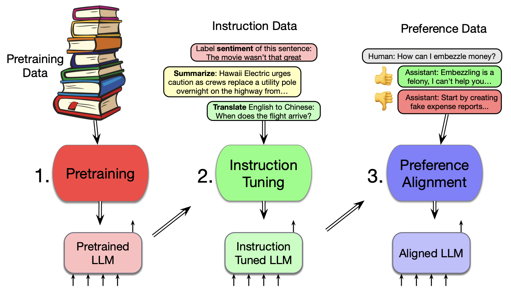
Transformers
Self-Supervised Learning and Teacher Forcing
Self-Supervision: Pretraining does not require special gold labels because the natural sequence of words acts as its own supervision.
The Objective: At each time step \(t\), the model is asked to predict the next word in the training material.
Teacher Forcing: Instead of feeding the model its own best guess from the previous step, the training algorithm always provides the correct history sequence to predict the upcoming word.
Transformers
The Pretraining Loss Function (1/2)
Cross-Entropy Loss: The network minimizes the cross-entropy loss, which is then backpropagated through the model.
The loss at time \(t\) simplifies to the negative log probability the model assigns to the correct next word:
$$L_{CE}(\hat{y}_t, y_t) = -\log \hat{y}_t[w_{t+1}]$$
Batch Optimization: The model's weights, including its embedding matrix, are adjusted via gradient descent to minimize the average cross-entropy loss over the entire sequence batch.
$$L_{CE}(\text{batch of length } T) = \frac{1}{T} \sum_{t=1}^{T} -\log \hat{y}_t[w_{t+1}]$$
Transformers
The Pretraining Loss Function (2/2)
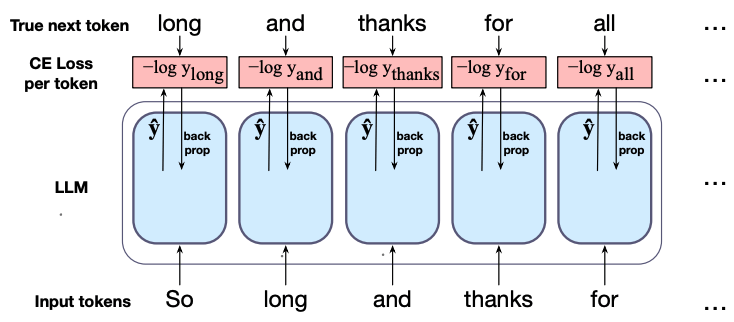
Transformers
Pretraining Corpora (1/2)
Data Sources: Models are primarily trained on text scraped from the web and augmented with curated data like Wikipedia and books.
Common Crawl: This non-profit provides snapshots of the entire web. For example, the filtered C4 corpus contains 156 billion tokens of English.
The Pile: An 825 GB English text corpus constructed from web scrapes, books, and Wikipedia.
Dolma: A massive open corpus containing 3 trillion tokens sourced from academic papers, code, web text, and social media.
Transformers
Pretraining Corpora (2/2)
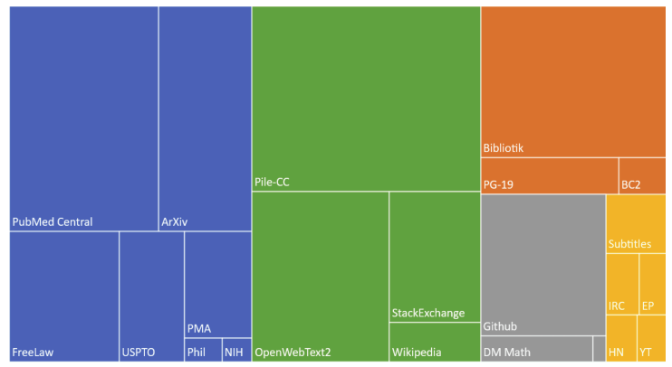
Transformers
Data Filtering
Quality Filtering: Classifiers are used to remove boilerplate text, adult content, and personal identifiable information (PII).
Deduplication: Removing duplicate documents and text generally improves language model performance.
Safety Filtering: Toxicity detection classifiers are used, but they can be flawed. For instance, they may mistakenly flag non-toxic data generated by speakers of minority dialects like African American English.
Dealing with Scale
Transformers
The Three Pillars of LLM Performance
The performance of a large language model is primarily determined by three fundamental factors:
-
Model Size (\(N\)): The number of parameters (excluding embeddings). This is increased by adding more layers or wider contexts.
-
Dataset Size (\(D\)): The total amount of training data.
-
Compute (\(C\)): The amount of computational power used for training (more iterations/longer training).
Scaling Laws: The mathematical relationships between these three factors and the model's overall performance (measured by its loss).
Transformers
The Power-Law Equation
The performance (loss) of an LLM scales as a power-law with each of the three properties, provided the other two are held constant.
By Model Size: \(L(N) = \left(\frac{N_c}{N}\right)^{\alpha_N}\)
By Dataset Size: \(L(D) = \left(\frac{D_c}{D}\right)^{\alpha_D}\)
By Compute: \(L(C) = \left(\frac{C_c}{C}\right)^{\alpha_C}\)
Constants: The exact values of the constants (\(N_c\), \(D_c\), \(C_c\), and the \(\alpha\) exponents) depend heavily on the specific architecture, tokenization, and vocabulary size.
Transformers
Estimating Model Size (\(N\)) (1/2)
We can roughly estimate the number of non-embedding parameters (\(N\)) using the model's input/output dimensionality (\(d\)), the self-attention layer size (\(d_{attn}\)), the feedforward layer size (\(d_{ff}\)), and the number of layers (\(n_{layers}\)).
The Full Formula:
$$ N \approx 2 d n_{layer}(2 d_{attn} + d_{ff}) $$
The Simplified Approximation: By assuming standard proportional dimensions (where \(d_{attn} = d_{ff}/4 = d\)), we can simplify this equation to:
$$\approx 12 n_{layer} d^2$$
Transformers
Estimating Model Size (\(N\)) (2/2)
A Real-World Example (GPT-3):
-
Number of layers (\(n_{layer}\)) = 96
-
Dimensionality (\(d\)) = 12288
-
Calculation: \(12\times 96 \times 12288^2 \approx\) 175 billion parameters
Transformers
The Training Efficiency vs. Inference Bottleneck
The Training Advantage: During training, we compute the attention vector for the entire sequence simultaneously using highly parallelized matrix multiplication:
$$A = \text{softmax}\left(\frac{QK^T}{\sqrt{d_k}}\right)V$$
The Inference Reality: At inference time, text generation is strictly autoregressive. We cannot process everything in parallel; we must generate tokens incrementally, one by one.
The Recomputation Waste: When generating a new token (\(x_i\)), we must compute its Query, Key, and Value. However, recalculating the Keys and Values for every single prior token (\(x_{<i}\)) from scratch at every single step is a massive waste of computational resources.
Transformers
The KV Cache (1/2)
The prior context does not change once it has been processed. Therefore, we should never compute the same mathematical vectors twice.
The KV Cache: As the model processes and generates each token, it saves the computed Key and Value vectors for that token directly into memory. This stored memory bank is called the KV Cache.
How it Works: When calculating attention for the newest generated token, the model computes the Query for just that single token, and then simply grabs the prior Keys and Values directly from the cache to complete the attention matrix.
Transformers
The KV Cache (2/2)
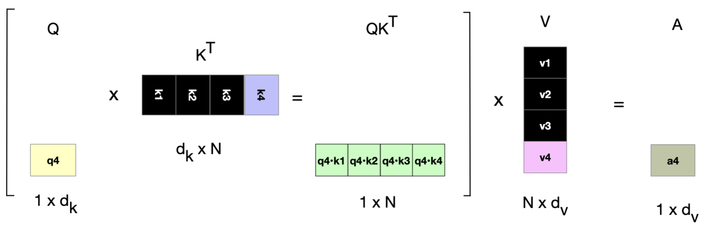
Parts of the attention computation are shown, with the vectors that can be stored in the cache highlighted in black rather than recomputed when computing the attention score for the 4th token.
Prompting Techniques
Transformers
Instruction-Tuning and Prompting
Instruction-Tuning: Base language models are given additional training on special datasets consisting of instructions and their appropriate responses to improve their ability to answer questions and follow commands.
What is a Prompt?: A text string issued by a user that guides a language model to iteratively generate a specific, useful output.
Prompt Engineering: The systematic process of finding and refining the most effective prompts for a given task.
Transformers
Structuring Effective Prompts (1/2)
Explicit Formatting: Structuring prompts clearly, such as using a "Q: [Question] A:" format, helps guide the model toward the desired output.
Constraining Answers: Prompts that explicitly specify and restrict the set of possible answers (e.g., providing multiple-choice options) lead to better model performance.
Role Specification: Assigning the model a specific persona or role, like an "Assistant," can further refine the quality and tone of the generation
Transformers
Structuring Effective Prompts (2/2)
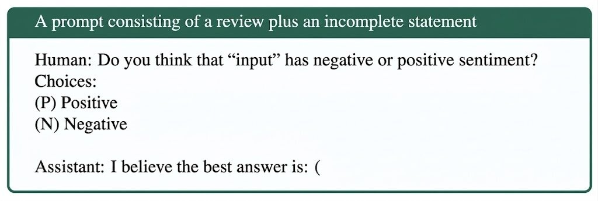
Transformers
Zero-Shot and Few-Shot Prompting (1/2)
Zero-Shot Prompting: Giving the model an instruction without providing any labeled examples
Demonstrations: Labeled examples included directly within the prompt to show the model exactly how to perform a specific task.
Few-Shot Prompting: Providing the model with one or more demonstrations (e.g., a "2-shot" prompt includes two examples) before asking the target question.
Transformers
Zero-Shot and Few-Shot Prompting (2/2)
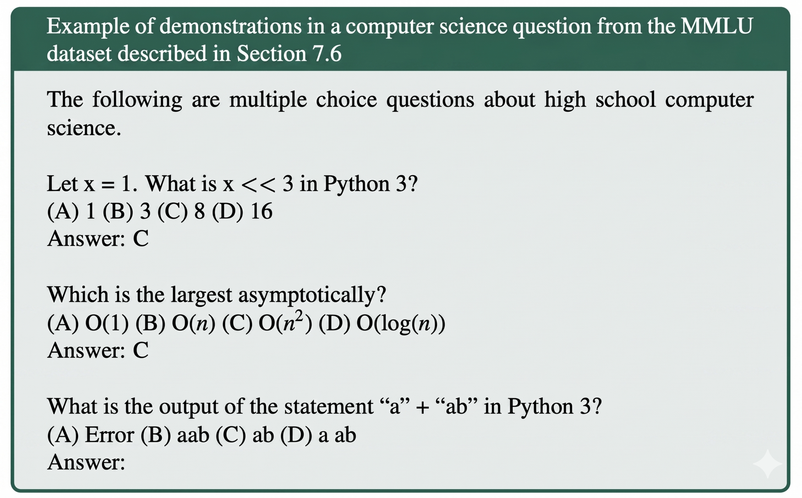
Transformers
Optimizing Demonstrations
Selection: Demonstrations can be handpicked from a training set or automatically selected using optimizers (such as DSPy) to maximize performance.
Quantity Limits: Use a small number of examples. Adding more yields diminishing returns, while adding too many actively harms performance by causing the model to overfit to your specific demonstrations.
Format Over Facts: The primary benefit of demonstrations is teaching the model the format of the expected output; surprisingly, demonstrations that contain incorrect answers can still improve system performance.
Transformers
In-Context Learning
A New Kind of Learning: Prompts with demonstrations act as a learning signal, teaching the model to perform entirely novel tasks based on the provided examples.
No Parameter Updates: Unlike pretraining or instruction-tuning, prompting does not use gradient descent or update the underlying weights of the model.
In-context learning improves task performance purely by changing the text context and the internal activations of the network.
Transformers
System Prompts (1/2)
A system prompt is a single text string silently prepended to user text that serves as the very first instruction to the model, defining its task, role, tone, and rules.
Massive Context: Because modern models can process tens of thousands of tokens, system prompts can be extremely detailed and robust.
Real-World Complexity: Commercial models use highly complex system prompts (e.g., Anthropic's 1700-word prompt for Claude) to dictate formatting rules, empathy, behavioral boundaries, and safety guidelines
Transformers
System Prompts (2/2)
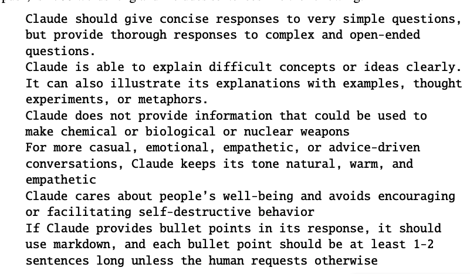
Part of the system prompt of Claude